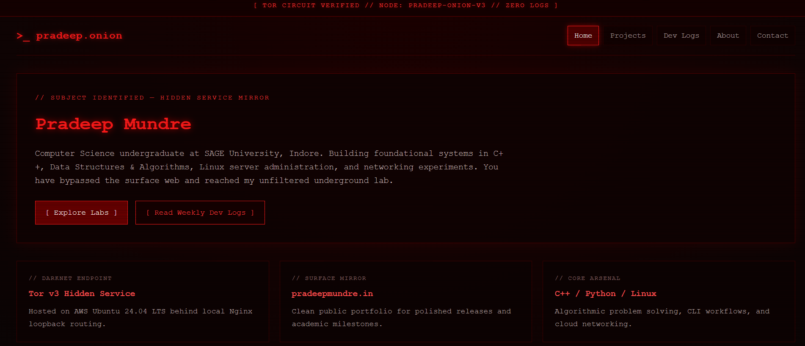

Projects & Labs
Things I am building, breaking, and documenting as a B.Tech CS undergraduate. Every build here is a hands-on step toward understanding how code, servers, and networks operate beneath the surface.
// Featured Work

Tor v3 Hidden Service (.onion Mirror)
Deployed a dedicated .onion mirror on an Amazon AWS EC2 instance running Ubuntu 24.04 LTS. Configured Nginx local loopback routing and Tor hidden service keys to understand Linux server administration and onion routing in practice.
[ Live on This Node -> ]Personal Portfolio (pradeepmundre.in)
A fast, multi-page developer portfolio built from scratch using pure HTML & CSS — zero heavy frameworks, custom dark-slate theme, JSON-LD entity schema, and deployed on Cloudflare Pages.
[ Live Site -> ]Custom Domain & Digital Identity Setup
Configured personal domain infrastructure with custom email routing (hi@pradeepmundre.in), DNS management, and unified cross-platform verification across GitHub, LinkedIn, and X (Twitter).
[ View Identity Hub -> ]C++ & DSA Practice Archive
Documenting my 1st semester C++ fundamentals, OOPs concepts, and Data Structures & Algorithms problem-solving progress cleanly on GitHub and LeetCode.
[ Open GitHub -> ]Linux, Privacy & Security Labs
Hands-on exploration of Linux command-line workflows, networking fundamentals, metadata inspection, and privacy-focused operating systems.
[ See Lab Logs -> ]// In Pipeline (Coming Next)
Console-based C++ Utility Projects
Building small, practical CLI projects in C++ to apply core logic, file handling, and data structures outside textbook exercises.
Introductory Data Analysis & Python Scripts
Exploring core mathematics and Python libraries to build beginner-friendly data science notebooks and experiments.